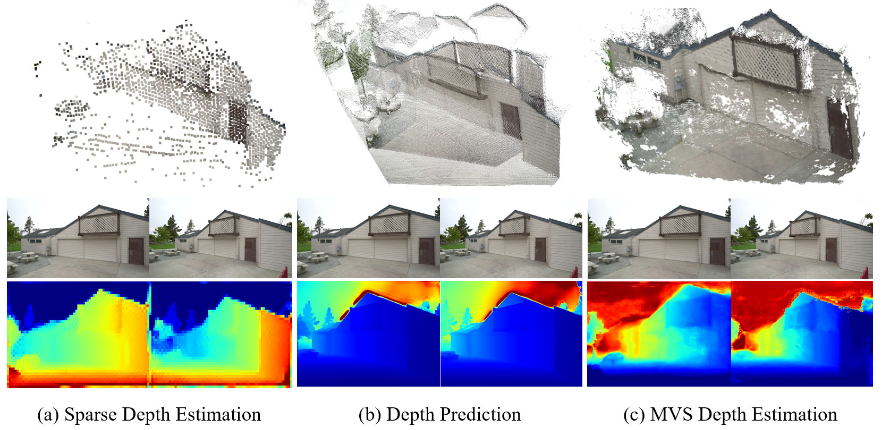
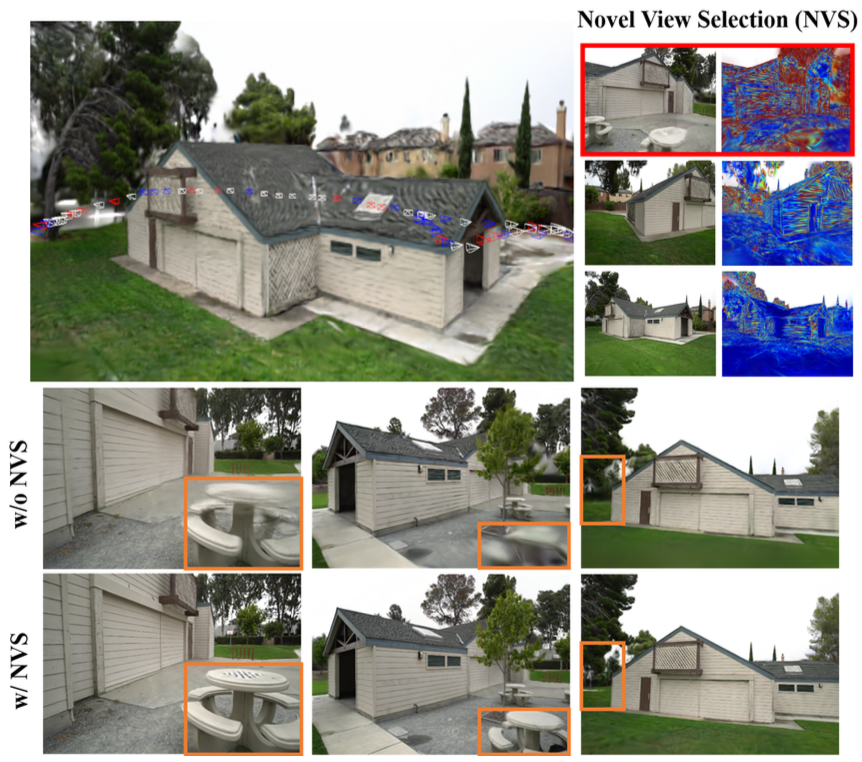
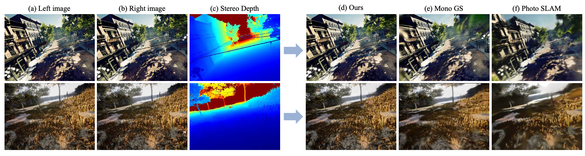
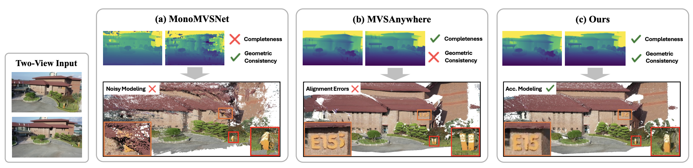

MVS-GS: High-Quality 3D Gaussian Splatting Mapping via Online Multi-View Stereo
Online mapping pipeline designed to preserve geometric quality while maintaining practical runtime.
Publications
Publications on online mapping, Gaussian Splatting, depth estimation, and multi-view stereo.
Each entry includes venue, year, authors, summary, and links.

Online mapping pipeline designed to preserve geometric quality while maintaining practical runtime.

View selection strategy for stable online splatting under constrained capture conditions.

Stereo depth integration for improved mapping stability and detail consistency.

Framework that combines monocular depth priors with multi-view geometry for robust reconstruction.
No public manuscript link is available.
External profiles and contact channels.